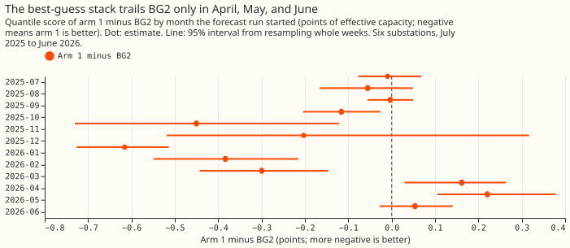
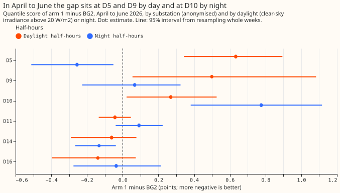
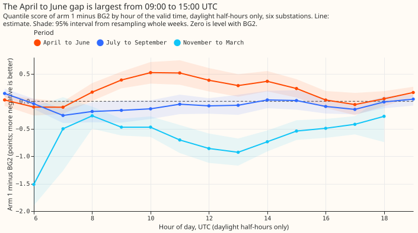
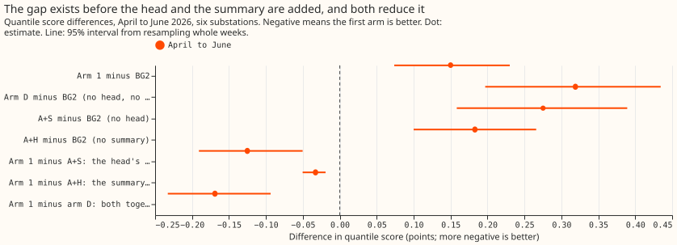
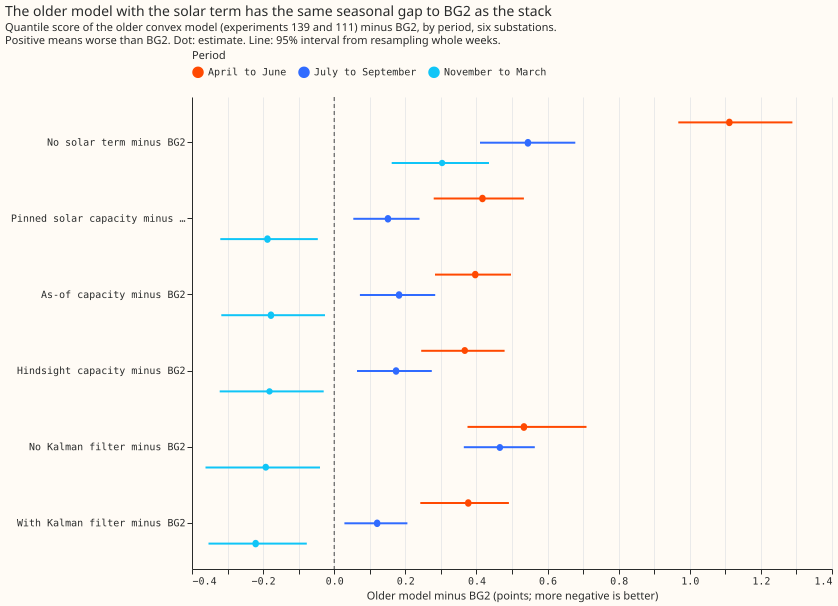
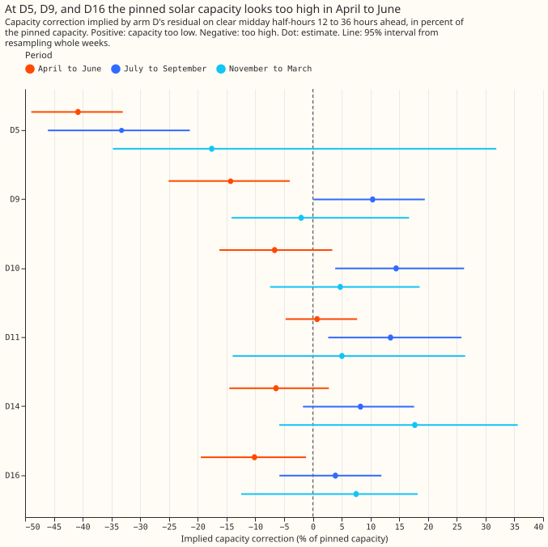
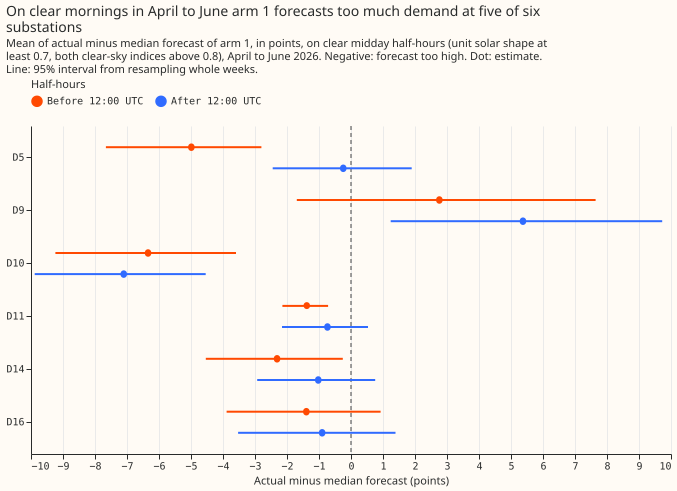
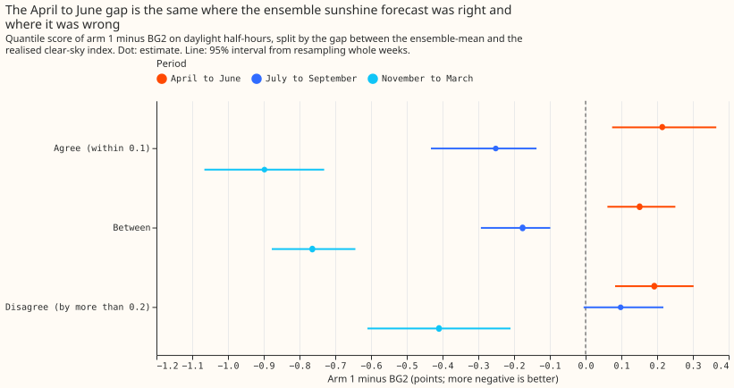

Which part of the best-guess demand stack makes it worse than BG2 in April to June and on sunny half-hours?
The best-guess demand forecast (the stack) beats BG2 over the year but is worse in April to June 2026, and the cause is localised. BG2 is the production-style XGBoost forecast. The stack subtracts an estimate of unmetered rooftop solar output from demand, called the solar term. Its April to June error comes from the solar term at two substations, D5 and D9, on daylight half-hours, and from a night-time error at a third, D10. D5, D9, and D10 are anonymised primary substations. The error does not come from the neural-network head, the two-number summary of the ensemble weather forecast, the Kalman filter, or the ensemble sunshine forecast. We had predicted that the pinned solar capacity is too low in those months; it looks too high at D5, D9, and D16. On clear days the stack forecasts too much demand in the morning relative to the afternoon. Candidate next experiments are an export clip at D9, a morning-and-afternoon solar shape, and a look at D10's night residuals.
Scores are quantile scores in points of effective capacity (a substation's rated demand), and a lower score is better. A difference written "arm 1 minus BG2" is therefore positive where the stack is worse. A residual is observed minus forecast demand, so a negative residual means the forecast was too high.
Verdict partly supported. The hypothesis said the explicit solar term is the main cause.
Daylight half-hours hold 78% of the April to June gap, as the solar-term explanation predicts, but
an error in the weather input or the demand terms would also produce a daylight gap. The hypothesis
also implied a common cause, but the gap is not common to all substations: D5, D9, and D10 carry the
gap, and the other three substations are level with or better than BG2. Four of the eight
predictions held (P0, P1, P4, and P7), P5 held for the summary and failed for the head, and P2, P3,
and P6 failed.
P1 holds on the point estimate: the daylight gap is +0.189 (+0.089 to +0.298) and the night gap
+0.087 (+0.016 to +0.145), a ratio of 2.17 whose interval spans 0.94 to 7.29.
Experiment 251 found that the best-guess demand stack beats BG2 over the year, but only through November to March. In April to June the stack is 0.05 to 0.22 points worse, and at D5 on sunny half-hours it is 1.30 points worse. The maintainer suspects that unmetered rooftop solar is modelled badly. This experiment runs six diagnostics on forecasts that earlier experiments already stored, so nothing is refitted.
Terms. Arm 1 (the stack) is the convex demand model with a Kalman filter (arm D), plus a small neural network that corrects the median (the neural-network head), plus a mean-and-standard-deviation summary of the 51 ensemble weather members' solar response (the two-number summary). A+S is arm 1 without the head, A+H is arm 1 without the summary, and arm D has neither. An arm is one configuration of the forecast whose output was stored. The export clip caps the solar output that the forecast subtracts from demand at 60% of the solar capacity held for D5 (experiment 180). GAM-K is the older generalised additive model with a Kalman filter of experiments 111 and 139, and gam0 is the same model without the filter. Primaries are primary substations, which step power down from the high-voltage network to the local distribution network. The pin is the solar capacity held fixed for each fit, and the clear-sky index is irradiance divided by clear-sky irradiance.








Results
- Gate (P0) held. Arm 1 minus BG2 is +0.162, +0.220, and +0.054 in April, May, and June, the numbers of experiment 251. Every arm has the 561,207 row keys, except the as-of and hindsight arms of experiment 139, which have no D9 and so 464,233.
- Ranked causes. Each cause lists the rows that carry its gap per row, and the causes overlap.
- Solar term at D5 and D9. Daylight gap +0.633 (95% interval +0.343 to +0.894) at D5 and +0.499 (+0.055 to +1.083) at D9, against +0.150 over all rows. D5, D9, and D10 together average +0.364 (+0.193 to +0.552) and the other three substations -0.060 (-0.175 to +0.035). At D5 the clip arm (arm 2c) lowers the April to June sunny-half-hour gap from +1.779 (+1.345 to +2.255) to +0.656 (+0.438 to +0.850). Fix experiment needing no refit to start: the 60% export clip of experiment 180 applied to D9.
- Solar shape. The mean residual on clear midday half-hours is 1.5 points lower before 12:00 UTC than after it (-1.525, interval -2.390 to -0.779, pooled over six substations), and the asymmetry of P6 is 0.11, 0.61, 0.77, 0.43, 1.81, and 0.64 at D10, D11, D14, D16, D5, and D9, so P6 failed. D9's residuals are positive in both halves of the day, where the other substations' are negative. Fix experiment needing no refit to start: refit arm D with a per-substation morning-and-afternoon split of the solar shape and score April to June.
- Night-time error at D10 (post hoc). D10's night gap is +0.776 (+0.381 to +1.116) and its daylight gap +0.269 (+0.022 to +0.526). Fix experiment needing no refit to start: inspect D10's night residuals by month and half-hour.
- Cleared. The neural-network head lowers the April to June score by 0.125 (arm 1 minus A+S -0.125, -0.191 to -0.050), so P5 failed for the head and the head is not the cause. The two-number summary lowers it by 0.033 (-0.050 to -0.019), so P5 held for the summary. The Kalman filter changes it by -0.157 (GAM-K minus gam0, -0.368 to +0.017), an interval that includes zero but stays below the +0.05 threshold. The ensemble sunshine forecast is cleared by P4: the gap is +0.214 (+0.074 to +0.366) where the ensemble-mean and realised clear-sky indices agree and +0.192 (+0.082 to +0.302) where they disagree; the ratio is 1.12 (0.48 to 2.04). Pooled night half-hours give +0.087 (+0.016 to +0.145), below the +0.15 threshold for the heating and lighting terms.
- The gap starts in arm D. Arm D minus BG2 in April to June is +0.319 (+0.197 to +0.434), and the head and summary bring arm 1 to +0.150. The plan's literal rule reports a component as masked when single removal clears it while arm D minus BG2 is at least +0.15. Here the head and summary reduce the gap and hide no defect.
- Not a stack effect. The older GAM-K model with the pinned capacity has the same seasonal pattern against BG2: +0.417 (+0.280 to +0.533) in April to June, +0.151 in July to September, and -0.188 in November to March. The ERA5-driven filter arm scores -0.015 (-0.077 to +0.046) against the ensemble-driven one in April to June (descriptive only).
- P2 failed. The solar term improves the score more, not less, in April to June: the no-solar-term arm minus the pinned arm is +0.694 (+0.497 to +0.923) in April to June and +0.394 (+0.297 to +0.490) in July to September; the difference July to September minus April to June is -0.301 (-0.557 to -0.070). The as-of capacity (+0.397) and the hindsight capacity (+0.367) score level with the pin (+0.417) against BG2, so the accuracy of the capacity does not explain the gap.
- P3 failed, with the opposite sign. The capacity correction implied by arm D's residual in April to June is -40.8% at D5 (-48.9% to -33.0%), -14.3% at D9 (-25.1% to -4.0%), -10.2% at D16 (-19.5% to -1.2%), -6.7% at D10, -6.4% at D14, and +0.7% at D11. Negative means the pinned capacity is too high. In July to September the same correction is positive at five of six substations (+3.9% to +14.5%, except D5 at -33.2%). The estimate is measured after the Kalman filter, so it is a pointer and not an independent capacity estimate; experiments 231 and 241 found the capacity estimator recovers 0.83 of an injected farm.
- P7 held. At D5 on sunny half-hours arm 1 is +1.298 (+0.980 to +1.633) over the year and arm 2c +0.540 (+0.354 to +0.719), the numbers of experiment 251.
- Where in the day. The April to June daylight gap is +0.398 (+0.241 to +0.552) from 08:00 to 12:00 UTC and +0.316 (+0.143 to +0.492) from 12:00 to 16:00 UTC (figure 3).
- Rows, schedule, and weather. The diagnostics use the 561,207 rows of experiment 251. The stored forecasts were produced with monthly refits (stack) and weekly refits (BG2). Realised sunshine is CAMS irradiance, which exists only after the fact; the ensemble-mean irradiance is available at forecast time. Nothing was refitted and nothing was downloaded.
- Post hoc. We chose these cuts after seeing the results: by substation and daylight, the D10 night gap, the pooled morning-minus-afternoon difference, the clip comparison in April to June, and every month of capacity correction.
- What this cannot tell. One year, and 14 weeks in April to June, so intervals are wide. The stratification by ensemble agreement does not rule out a biased solar response of the ensemble that a refit with realised irradiance as the driver would expose; no such refit was run.
Checks
- Median minus mean forecast. Arm D's median and mean are identical at all six substations (difference 0.0), because its quantiles are built symmetrically around the mean, so no spread shifts the forecast. The mean forecast of arm 1 is not stored.
- Error of the median beside the quantile score. The mean absolute error of the median, arm 1 minus BG2, is +0.311 (+0.141 to +0.474) in April to June, -0.084 (-0.151 to -0.015) in July to September, and -0.648 (-0.840 to -0.426) in November to March, the same signs as the quantile score.
- Triggers (the seven audit triggers of the experiment guide). Trigger 1 (a failed control) did not fire, because the gate passed. Trigger 2 (a result contradicts its prediction) fired: P2, P3, P6, and P5 for the head contradicted their predictions; the explanation tested for P3 is the D5 export clip above. Trigger 3 (median and mean forecasts disagree) did not fire. Trigger 4 (leaving one site out flips a contrast) did not fire: leaving out any one substation keeps the April to June gap positive (+0.087 to +0.201, every interval above zero). Triggers 5 to 7 (nested arms, interval widths against a sister experiment, and later design depending on this result) did not apply. One caveat remains: later experiments will depend on this ranking, and one year of data has not been replicated.
- Audit. A fresh Sonnet agent re-derived the headline numbers from the stored arrays with its own code and matched them: April to June gap +0.150 (+0.074 to +0.231), daylight +0.189, night +0.087, arm 1 minus A+S -0.125, minus A+H -0.033, minus arm D -0.169, arm D minus BG2 +0.319, agree +0.214 against disagree +0.192, and the no-solar-term arm minus the pinned arm +0.695 and +0.394. It found no row misalignment, duplicate, crossing quantile, or leakage through the normalised solar profile, and could not check whether the stack's settings saw April to June data. Experiments 220 and 251 describe the refit schedule.
Plan
- Diagnostic 1, error map. Quantile score of arm 1 minus BG2 by month, by realised clear-sky index band (CAMS irradiance over clear-sky irradiance, from experiment 178's rows), by ensemble-mean clear-sky index band, and by hour of day, at the six substations. Bands apply to daylight half-hours only (clear-sky irradiance above 20 W/m²); night half-hours form their own cut.
- Diagnostic 2, solar term on and off. The GAM-K arms of experiment 139 (no solar term, pinned capacity, as-of capacity, hindsight capacity) minus BG2 by month. These arms are a proxy for the stack, because the stack with its solar term removed was never stored. The result feeds the solar capacity cause through P2.
- Diagnostic 3, capacity bias. The capacity held by each monthly GAM-K fit against the capacity that arm D's residual implies: on clear midday half-hours at 12 to 36 hours ahead, regress the signed residual on the normalised solar profile, per substation and month. The implied correction is measured after the Kalman filter and so is not independent of the fit. The independent reference is the recovery factor of the capacity estimator in experiment 231 and experiment 241, which found 0.83 of an injected farm recovered.
- Diagnostic 4, weather input. Split the daylight gap by whether the ensemble-mean and realised clear-sky indices agree (within 0.1), disagree (by more than 0.2), or lie between, and report experiment 111's ERA5-driven filter arm beside the ensemble-driven one as description only. A refit with realised irradiance as the solar driver is the cheapest fix if the split cannot decide.
- Diagnostic 5, residual shape. Mean signed residual of arm 1 at clear midday by month, before and after 12:00 UTC, and at D5 against arm 2c.
- Diagnostic 6, ablations in April to June. Arm 1 against A+S, A+H, and arm D, from experiment 220's stored arms.